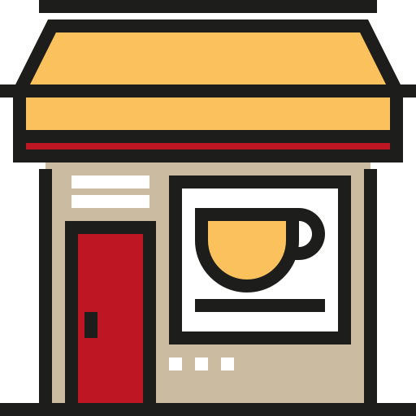

<!DOCTYPE html>
<html>
  <head>
    <meta charset="utf-8" />
    <meta http-equiv="X-UA-Compatible" content="IE=edge" />
    <meta
      name="viewport"
      content="width=device-width, initial-scale=1.0, maximum-scale=1.0, minimum-scale=1.0, user-scalable=no"
    />
    <title>map</title>

    <style>
      body {
        margin: 0;
      }
      #map {
        width: 100%;
        height: 100vh;
      }
      .cafe-img {
        width: 26px;
        height: auto;
      }
      .current-location {
        display: flex;
        background: white;
        border-radius: 50%;
        padding: 5px;
        margin: 10px;
        border: 1px solid gray;
      }
    </style>
  </head>
  <body>
    <div id="map" onclick="closeModal()"></div>

    <script>
      function closeModal() {
        if (window.ReactNativeWebView) {
          window.ReactNativeWebView.postMessage("closeModal");
        }
      }
    </script>
    <script type="module">
      import locations from "./data.js";

      // ################################
      // 최초 맵 세팅
      const mapOptions = {
        center: new naver.maps.LatLng(37.497952, 127.027619),
        zoom: 13, //지도의 초기 줌 레벨
        minZoom: 8, //지도의 최소 줌 레벨
        zoomControl: true, //줌 컨트롤의 표시 여부
        zoomControlOptions: {
          //줌 컨트롤의 옵션
          position: naver.maps.Position.TOP_RIGHT,
          style: naver.maps.ZoomControlStyle.SMALL,
        },
      };
      const map = new naver.maps.Map("map", mapOptions);

      // ################################
      // html 마커 그리기
      const markers = [];
      for (let i = 0; i < locations.length; i++) {
        const marker = new naver.maps.Marker({
          position: new naver.maps.LatLng(locations[i].lat, locations[i].lng),
          map: map,
          title: locations[i].placeName,
          icon: {
            content: [
              '<div class="cs_mapbridge">',
              '<div class="map_group _map_group crs">',
              '<div class="map_marker _marker num1 num1_big"> ',
              `<span class="ico _icon">${locations[i].placeName}</span>`,
              '<span class="shd"></span>',
              "</div>",
              '',
              "</div>",
              "</div>",
            ].join(""),
            size: new naver.maps.Size(38, 58),
            anchor: new naver.maps.Point(19, 58),
          },
        });

        naver.maps.Event.addListener(marker, "click", function (e) {
          event.stopPropagation();
          map.panTo(
            new naver.maps.LatLng(locations[i].lat - 0.005, locations[i].lng),
            {
              duration: 500,
            },
          );

          if (window.ReactNativeWebView) {
            const data = JSON.stringify({
              type: "clickMarker",
              ...locations[i],
            });
            window.ReactNativeWebView.postMessage(data);
          }
        });
        markers.push(marker);
      }

      // ################################
      // 현재 위치로 이동
      const locationBtnHtml =
        '<div class="current-location"></div>';
      naver.maps.Event.once(map, "init", function () {
        const customControl = new naver.maps.CustomControl(locationBtnHtml, {
          position: naver.maps.Position.LEFT_BOTTOM,
        });

        customControl.setMap(map);

        naver.maps.Event.addDOMListener(
          customControl.getElement(),
          "click",
          function () {
            if (window.ReactNativeWebView) {
              window.ReactNativeWebView.postMessage("getCurrentLocation");
            }
          },
        );
      });

      // map 바뀌면 실행: 눌러서 이동하거나 크기 조절했을때
      naver.maps.Event.addListener(map, "idle", function () {
        updateMarkers(map, markers);
      });
      function updateMarkers(map, markers) {
        const mapBounds = map.getBounds();
        let marker;
        let position;

        for (let i = 0; i < markers.length; i++) {
          marker = markers[i];
          position = marker.getPosition();

          if (mapBounds.hasLatLng(position)) {
            showMarker(map, marker);
          } else {
            hideMarker(map, marker);
          }
        }
      }

      function showMarker(map, marker) {
        if (marker.getMap()) return;
        marker.setMap(map);
      }

      function hideMarker(map, marker) {
        if (!marker.getMap()) return;
        marker.setMap(null);
      }

      // ################################
      // 앱으로부터 데이터 받아오기
      window.addEventListener("message", ({ data }) => {
        const objData = JSON.parse(data);
        if (objData?.name === "currentLocation") {
          map.panTo(
            new naver.maps.LatLng(objData.latitude, objData.longitude),
            {
              duration: objData.duration,
            },
          );
          const marker = new naver.maps.Marker({
            position: new naver.maps.LatLng(
              objData.latitude,
              objData.longitude,
            ),
            map: map,
          });
        }
      });
    </script>
  </body>
</html>
